이념 분포
대마다 하원의원을 DW-NOMINATE 1차원(가로, 진보–보수)과 2차원(세로) 위에 찍었습니다. 색은 당적, 모양은 계파입니다.
한 의원이 여러 계파에 속하면 모양 하나만 씁니다. 우선순위는 민주당 계열 CPC > Populist > 청견민주 > 신민주연합, 공화당 계열 HFC > Tea Party > Liberty > Main Street Caucus > RMSP > RSC이고, 초당파 PSC가 마지막입니다(작고 뚜렷한 계파 우선). 그래서 예를 들어 118대 이후 메인스트리트파트너십 소속 대부분은 Main Street Caucus 모양으로 보입니다. 범례에 없는 계파는 그 대에 출처가 없다는 뜻입니다. 115대까지의 계파 소속은 Clarke(2020) 수기 코딩, 116대부터는 공식 명단입니다. HFC는 114대부터 Matthew Green 명단입니다. 점수는 Voteview 2026-10-10판으로, 의원마다 경력 전체에 하나의 값이라 같은 의원은 모든 대에서 같은 위치에 찍힙니다.
119대 (2025–2027)
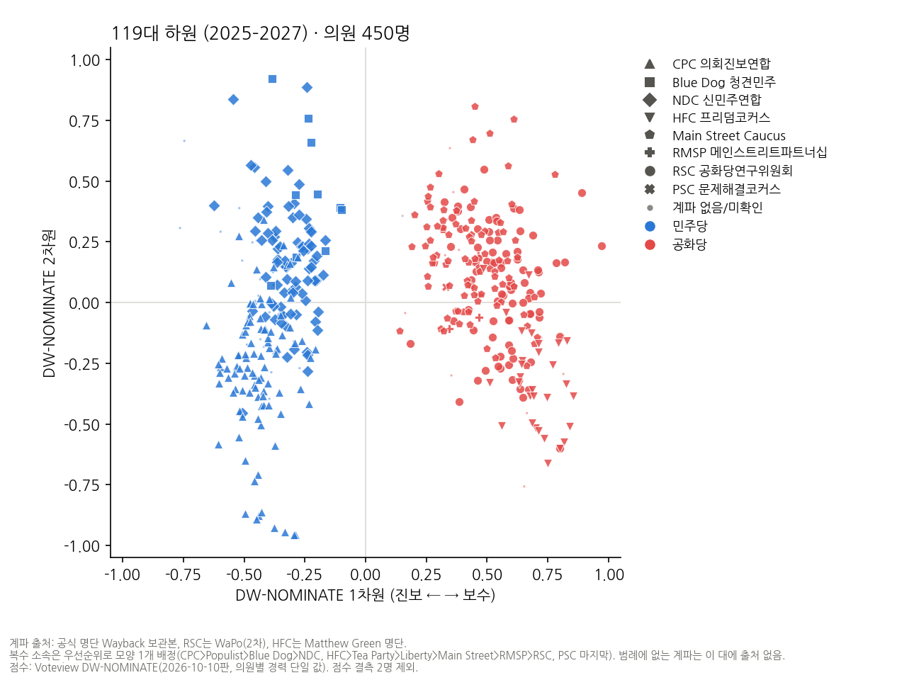
118대 (2023–2025)
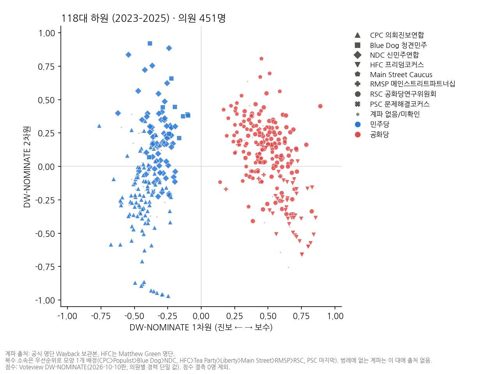
117대 (2021–2023)
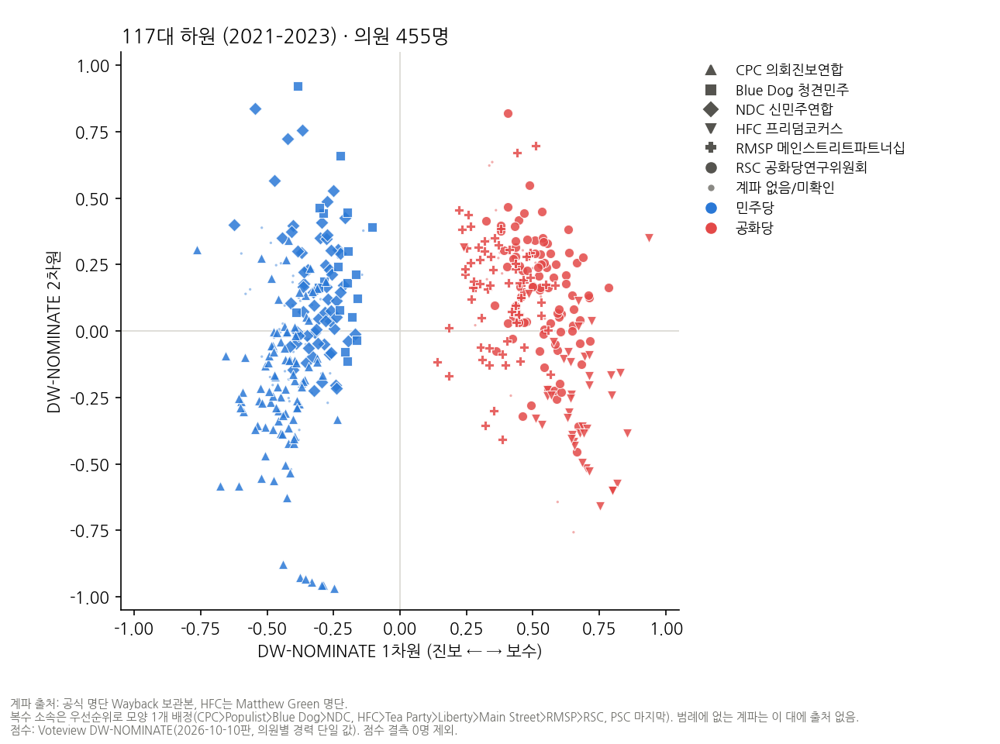
116대 (2019–2021)
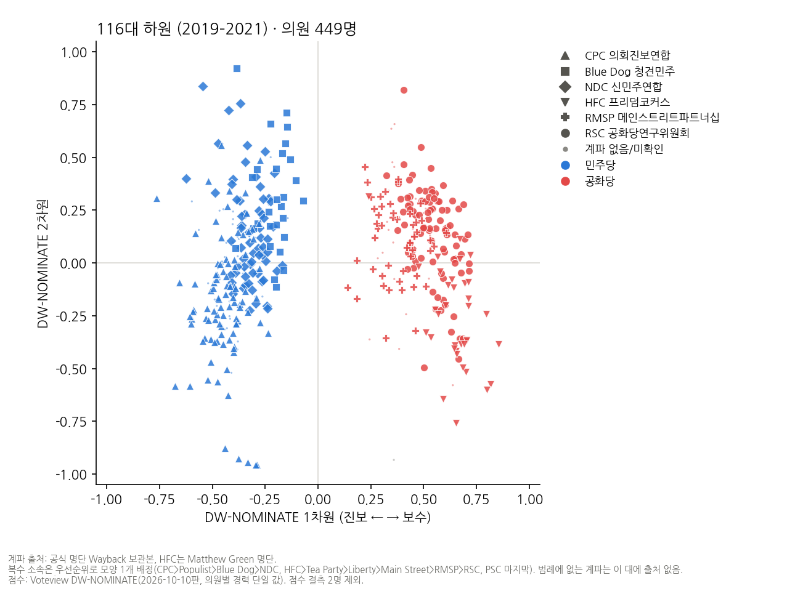
115대 (2017–2019)
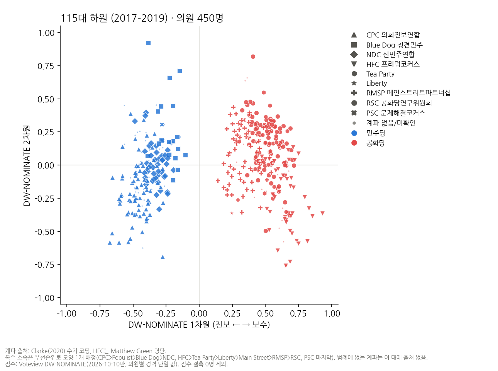
114대 (2015–2017)
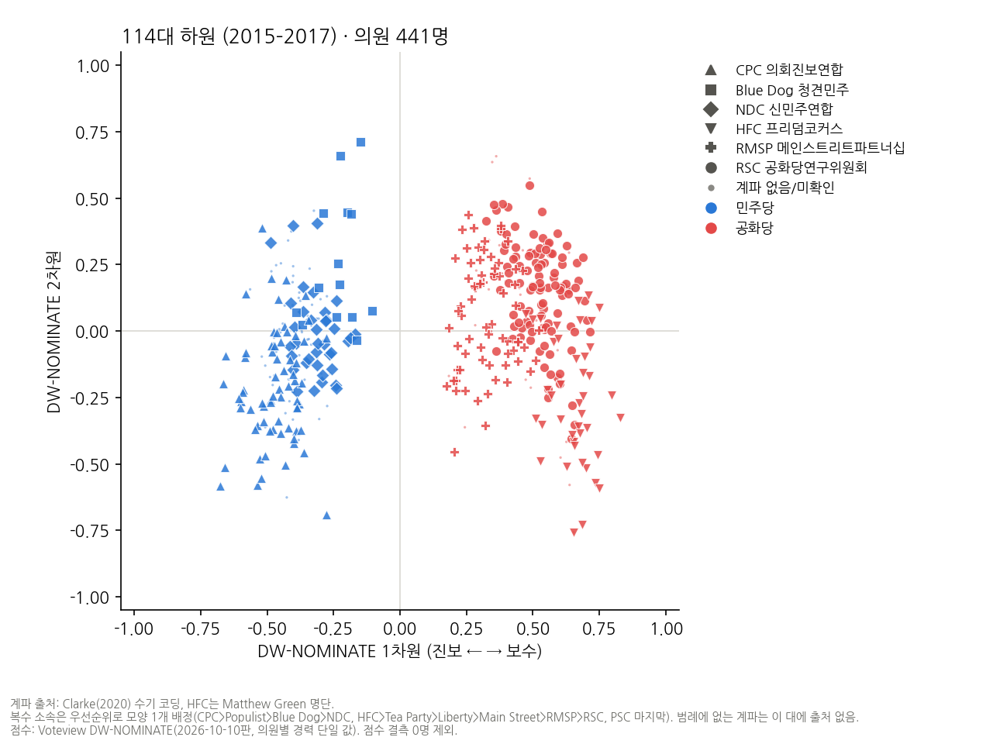
113대 (2013–2015)
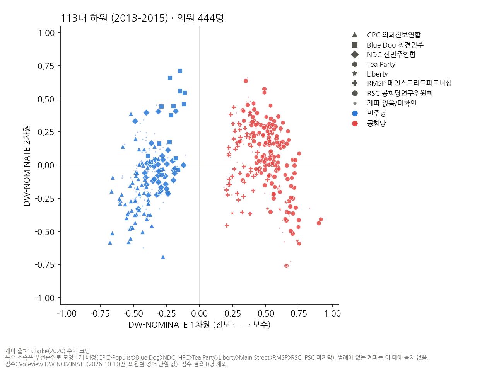
112대 (2011–2013)
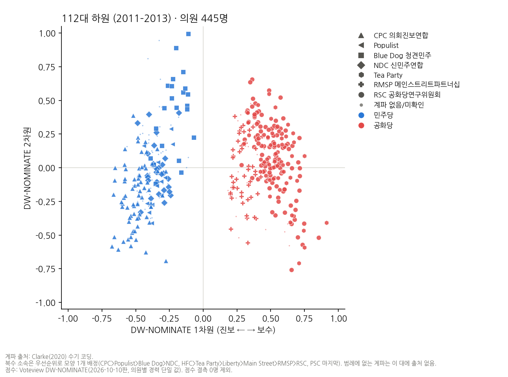
111대 (2009–2011)
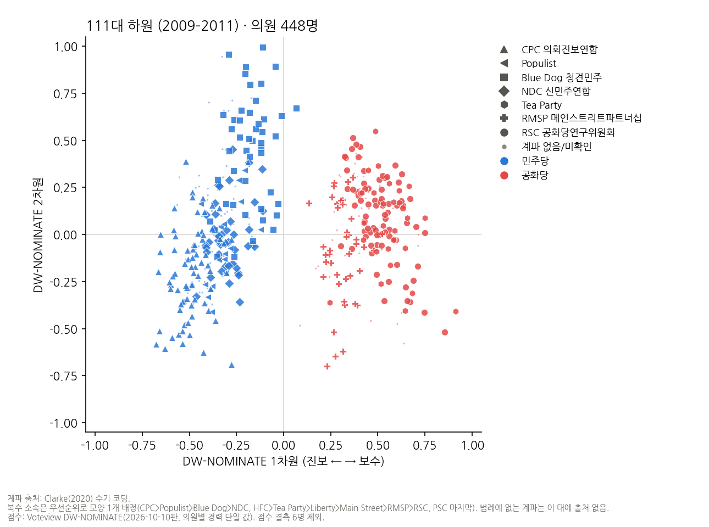
110대 (2007–2009)
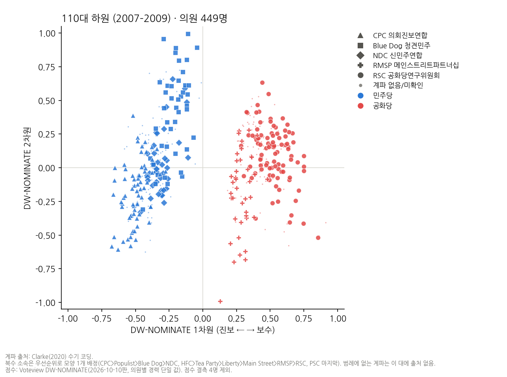
109대 (2005–2007)
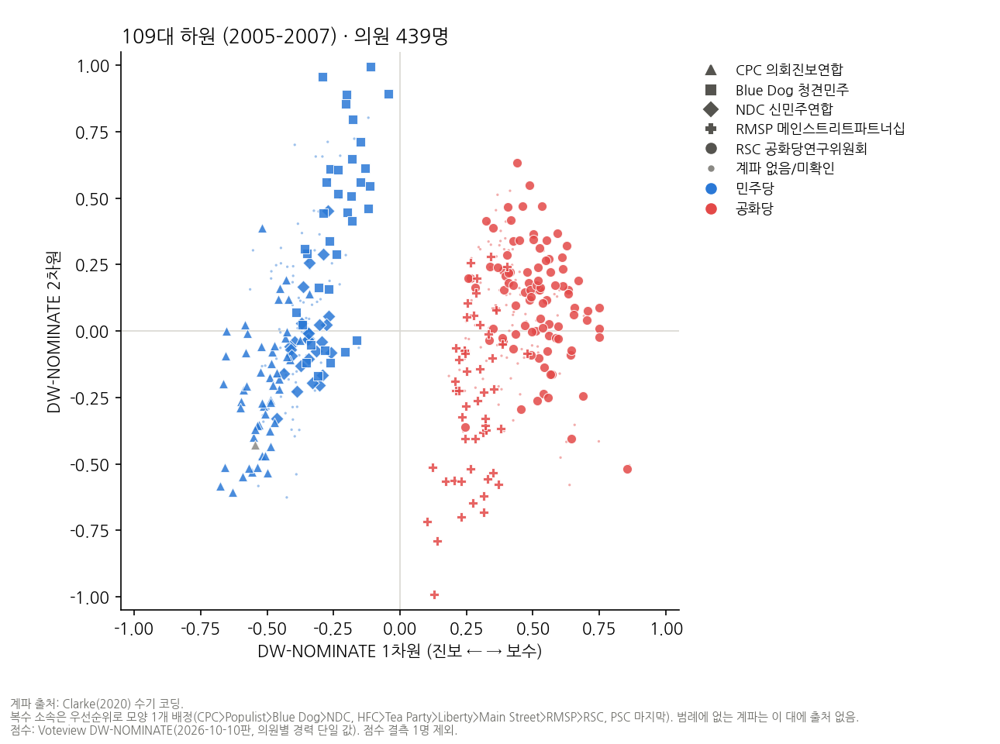
108대 (2003–2005)
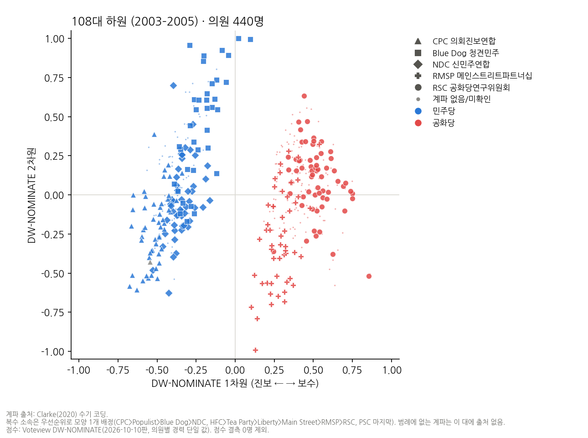
107대 (2001–2003)
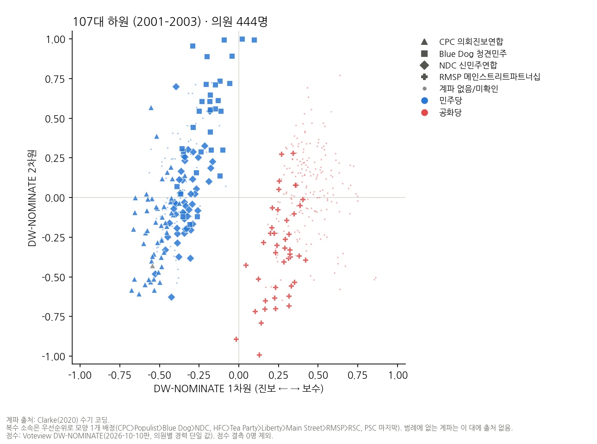
106대 (1999–2001)
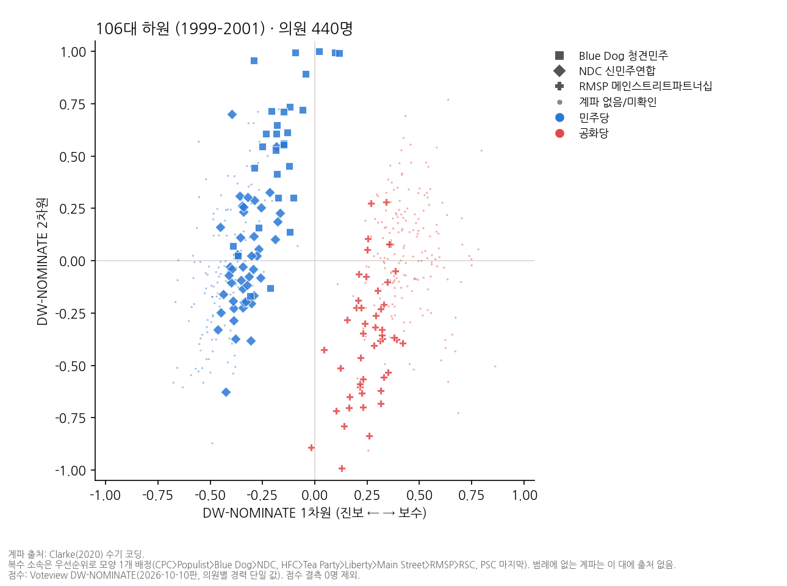